Azura is the daedric prince of dawn and dusk and she draws her power from these events. Her daedric realm is Moonshadow. She is generally considered one of the more just and benevolent daedric princes. Though her wrath is also swift and devestating when incurred. She has wiped out an entire race, the dwemer dwarves for trifling with her and striking the heart of Lorkhan. She also created the dunmer after their temporarily deified tribunal of Vivec, Almalexia and Sotha Sil insulted her by becoming divine and mocking her. The formerly golden skinned Chimer were turned ashen skinned and red eyed, they were all simultaneously transformed into dunmer just as the dwemer had all disappeared after the battle of Red Mountain. You can find a magnificent statue of her below.
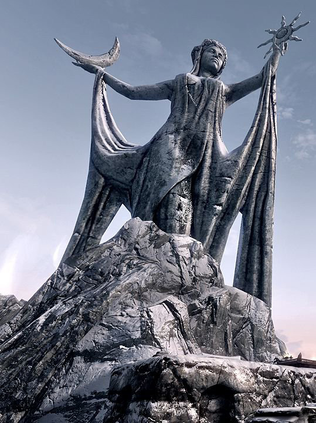
Boethiah is the Prince of deceit, secrecy, conspiracy, treason, and unlawful overthrow of authority. She is firmly in the category of evil daedra. Boethiah often holds tournaments among her worshippers to crown the victor of the deathmatch her Tamrielic champion. Boethiah is unisex and can appear as either sex. Oddly, the dunmer classify Boethiah as one of the three good daedra even though he is clearly not a good daedra. Although Boethiah seems to be connected to Boethiah by philosophy. See below a statue of Boethiah.
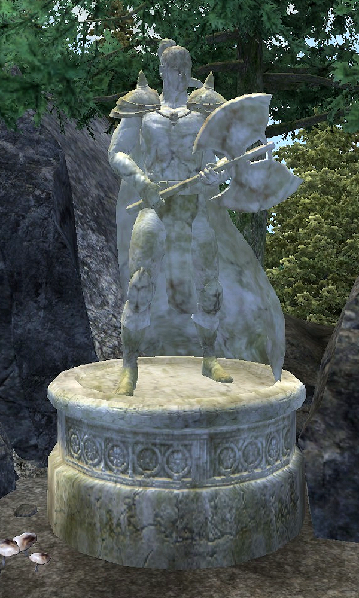
Clavicus Vile is the prince of deals and bargains as well as power, trickery, wishes and serenity. His plane of oblivion is known as The Fields of Regret. Clavicus Vile often gives things to his worshippers and then takes them back later, renegging on his deals. He particularly enjoys toying with mortals and messing with them. He usually appears as a child accompanied by a dog named Barbas. Vile is often associated with conjuration as he often creates lesser daedra to do his bidding.
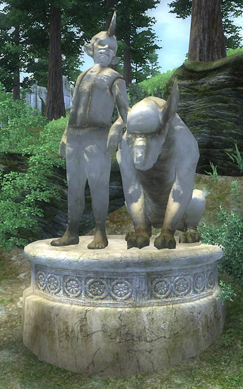
Hermaeus Mora is the formless daedric prince of knowledge and memory. His plane of oblivion is Apocrypha, an endless library with shelves and book piles stretching across the melancholy and bizarre landscape. The main method of accessing his realm is by reading certain black books. His realm contains all possible knowledge and he draws from this knowledge always. Below is an image of the strange prince.
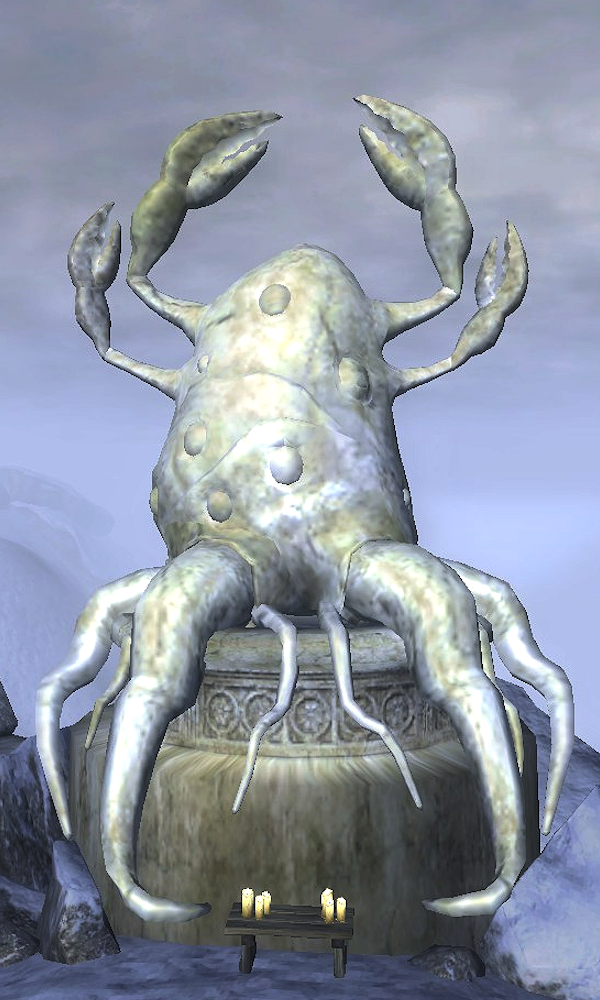
Hircine is the daedric prince of the hunt and the father of lycanthropy and werewolves. The Khajiit know him as "The hungry cat". Hircine's worshippers are often werewolves themselves. Hircine delights in the thrill of sending out his lycanthropic followers to hunt mortals. He is also the father of were-beasts in general such as wereboars, werebears, werelions and werecrocodiles. Hircine is generally one of the more accepted daedra, although lycanthropy remains extremely taboo to say the least. His daedric realm is known as the great hunt. Below is a depiction of Hircine.
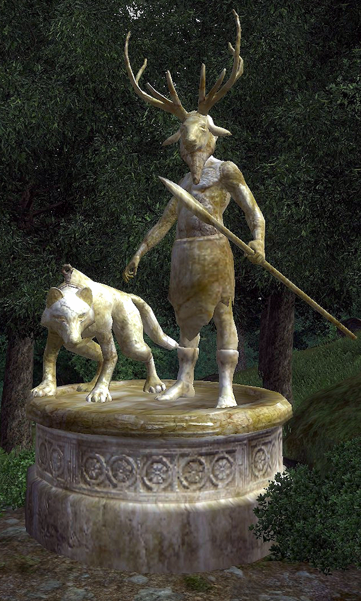
Jyggalag is the prince of logical order and deduction. He is also the same god as Sheogorath, but Jyggalag was the original. He is said to, at any point in time, have taken account of every detail of every action that has ever occurred long before they have taken place. He was transformed into Sheogorath by an alliance of the other daedra, they cursed him to be everything he hated. Thus is the origin of the prince of madness, Sheogorath. Every era, Jyggalag returns in what is called a Greymarch on his shared realm of oblivion with Sheogorath, the Shivering Isles. He has yet to be successful in his attempts to dislodge sheogorath from his realm. Below is an image of Jyggalag.
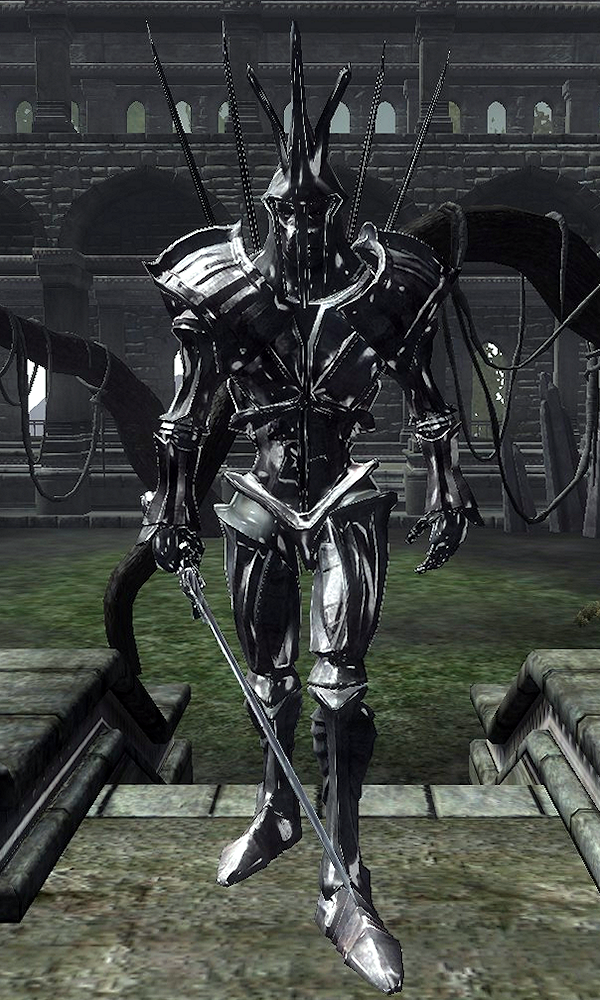
Malacath is the patron daedric prince of the orsimer or orcs. He is also the prince of the spurned and ostracized. He is the keeper of the sworn oath and the bloody curse that created the orcs. He is a member of the house of troubles in Dunmeri ideology. Malacath is also known as Malak, Orkey, the blue god and maouloch. The ashpit is Malacath's plane of oblivion, it is a desolate and unwelcoming place. Below is a statue of Hircine in Cyrodiil.
Mehrunes Dagon is the prince of destruction, change, revolution, energy and ambition. He is firmly within the house o f troubles in Dunmer ideology. Mehrunes Dagon has invaded Mundus on various occasions, most notably in 3E 433 during the oblivion crisis. He was defeated by an avatar of akatosh who Martin Septim gave his life to summon using the amulet of kings. Mehrunes Dagon is ambitious and seeks to conquer Tamriel from its supposedly dead lord, Lorkhan. The oblivion crisis badly damaged all corners of Tamriel before it came to an end. Below is an image of Dagon.
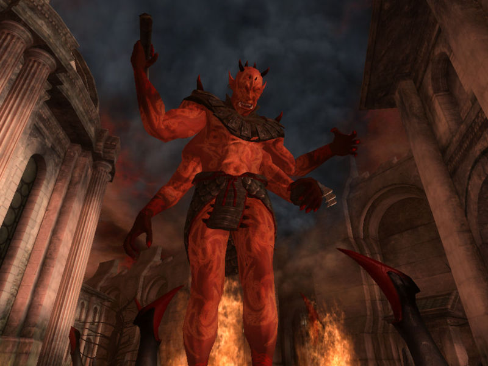
Mephala is the prince of discord and unknown plots. He is considered one of the three good daedra by the Dunmer. Mephala is generally associated with spiders. He is also known as the webspinner, the spinner and the spider. His daedric realm is the Spiral Skein, a giant web of lies and manipulation. Although I refer to Mephala as a he, he doesn't have a gender and is androgynous. Mephala appears as different genders depending on who she's trying to trick. The Dunmer Morag Tong assassins venerate Mephala as their patron. Below is a depiction of Mephala.
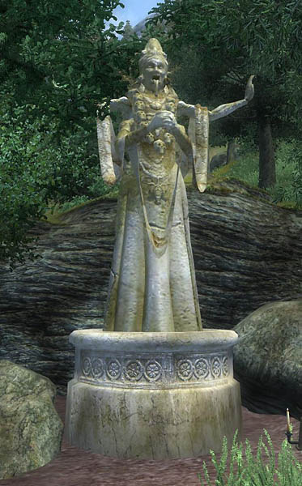
Meridia is the daedric prince of the energies of all living things, enemy of undead and any who disrupt the flow of life. Meridia was once known as merid-nunda. Meridia is one of the more obscure daedra who is nearly incomprehensible to most mortals. She was also originally a magna-ge, one of the et'Ada who escaped Mundus with Magnus after the creation of Mundus. Below is a massive statue of Meridia.
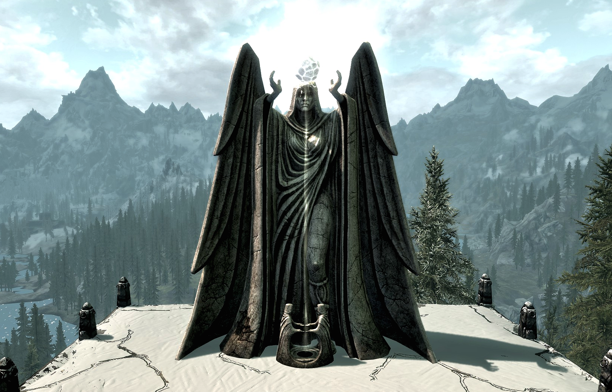
Molag Bal is the daedric prince of rape, domination and enslavement and the father of vampires. His realm is Coldharbour, a desolate and cold place. His main desire is to devour the souls of mortals and manipulate them. He invaded Tamriel in the midlle of the second era during and concurrent with the Alliance War. Below is an image of Molag Bal.
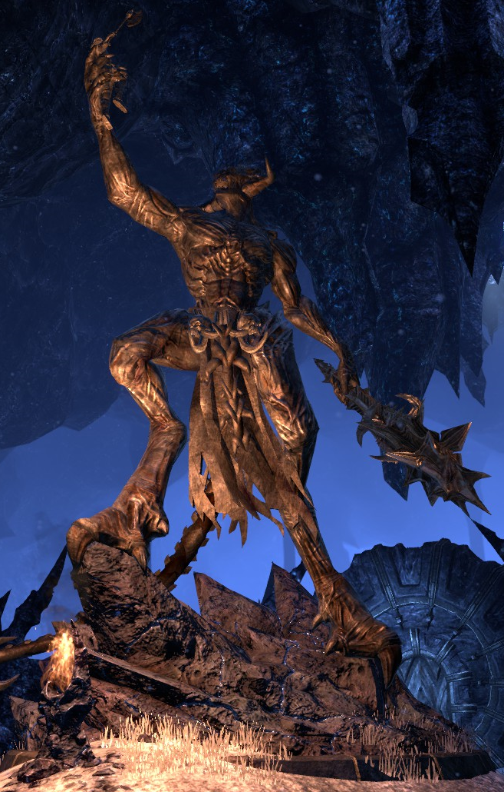
Namira is the daedric prince of ancient darkness and all things repulsive. Namira is commonly associated with spiders and slugs and other revolting insects. Namira is also the patron deity of cannibals. Namira's daedric plane of oblivion is called the Scuttling Void. See below a statue of Namira.
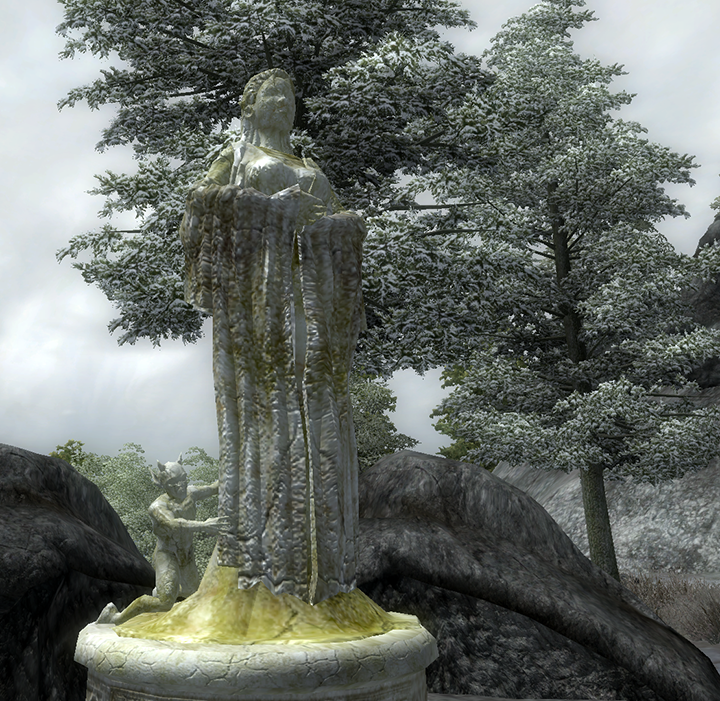
Nocturnal is the prince of night and darkness adn all things secretive. Nocturnal is the patron deadra of thieves for obvious reasons. Her "clergy" is made up of nightingales, master thieves who owe their sucess in part to Nocturnal. She is also known as the night mistress and lady luck. See an image of her below.
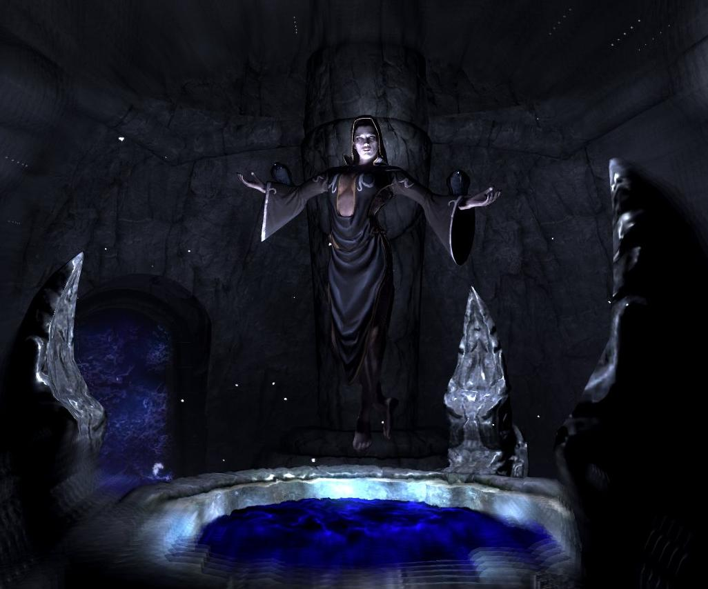
Peryite is the daedric prince of pestilence, he is known as the taskmaster. Peryite is charged with the ordering the lower planes of oblivion. He is considered to be the weakest of the daedric princes, but is still no slouch by any means. Peryite is genderless and usually appears as a dragon or a wyrm or a large gathering of rats. Peryite has indirectly influenced the lives of every creature that ever lived in Mundus. Below is a statue depicting Peryite.
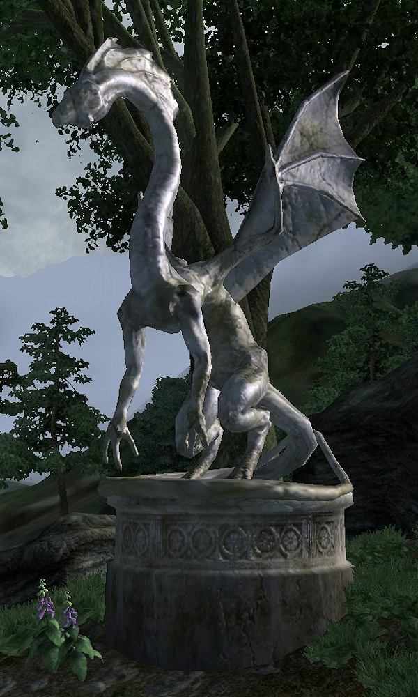
Sanguine is the daedric prince of hedonism, debauchery and dark indulgences. Sanguine likes to play pranks on mortals and other daedra alike. He is the patron daedra of sinners and those who indulge in all things taboo, including incest. Sanguine likes to drag mortals down by getting them hooked on gluttonous and indulgent lifestyles. Sanguine is known as Sangin the blood cat by the khajiit. Sanguine is pictured below.
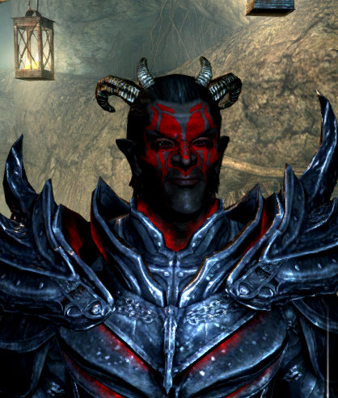
Sheogorath is the infamous daedric prince of madness, with unknowable motives. His realm is the Shivering Isles, which is divided into the realms of mania and dementia essentially light and dark. These realms are represented by the golden saints and the dark seducers respectively. Every era, Jyggalag attempts to usurp sheogorath from his throne in the Shivering Isles, known as the greymarches. So far, Sheogorath has come out on top each time. Sheogorath is pictured below.
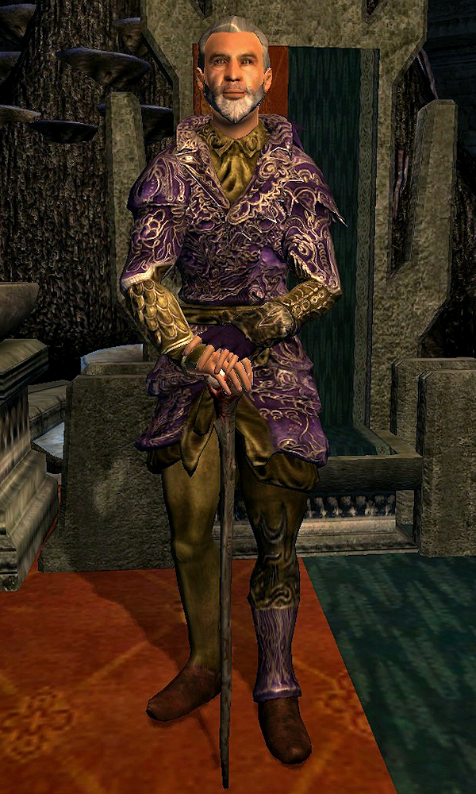
Vaermina is the daedric prince of nightmares and dreams. This daedra often delivers dark omens in dreams. She is also known for general psychological terror, torment and memory stealing. Vaermina typically appears as a female. Vaermina is closely related to Magnus, the source of magic in Tamriel. The Prince of deceit, secrecy, conspiracy, treason, and unlawful overthrow of authority. Vaermina's image is pictured below.

I have also organized the daedric princes into a table which can be seen below.